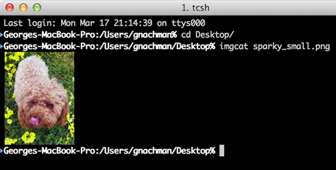

Utilities
iTerm2 has a collection of shell scripts that help you take advantage of some of its unique features. When you install Shell Integration from the iTerm2 > Install Shell Integration menu, you're asked if you'd like to install the Utilities Package as well. This page describes these utilities.
If you prefer to install only the utilities (without also installing Shell Integration) you can find them here. Most of the utilities work without Shell Integration.
Components
The Utilities Package contains the following programs:
imgcat
The imgcat program displays images inline in your terminal.

It supports all standard image formats, including animated GIFs.
Usage: imgcat filename [filename...] or cat image | imgcat
imgls
Lists the files in a directory with thumbnail previews for images.
Usage: imgls [filename...]
it2attention
Requests attention. Can bounce the dock icon or show a fireworks animation at the cursor position.
Usage: it2attention start Begin bouncing the dock icon if another app is active it2attention stop Stop bouncing the dock icon if another app is active it2attention fireworks Show an explosion animation at the cursor
it2check
Checks if the terminal emulator is iTerm2.
Example: it2check && echo This is iTerm2 || echo This is not iTerm2
it2copy
Copies text to the pasteboard. Works over ssh. Accepts either standard input or a named file.
Examples: cat file.txt | it2copy it2copy file.txt
For this to work you must enable Prefs > General > Applications in terminal may access clipboard.
it2dl
The it2dl program downloads files. This is useful when you are ssh'ed to a remote host. The downloaded files are placed in your Downloads folder.
it2getvar
Fetches a session variable. For a list of session variables, see the Badges page.
Example: it2getvar session.name
it2setcolor
Configures iTerm2's colors.
Usage
1) To set a specific color to an RGB value:
it2setcolor name color [name color...]
For example:
it2setcolor fg fff
name is one of:
fg bg bold link selbg selfg curbg curfg underline tab
black red green yellow blue magenta cyan white
br_black br_red br_green br_yellow br_blue br_magenta br_cyan br_white
color is of the format:
RGB (three hex digits, like fff)
RRGGBB (six hex digits, like f0f0f0)
cs:RGB (cs is a color space name)
cs:RRGGBB (cs is a color space name)
The color space names accepted in the color are:
srgb (sRGB, the default if none is specified)
rgb (Apple's old device-independent colorspace)
p3 (Apple's fancy large-gamut colorspace)
2) To switch to a named color preset:
it2setcolor preset name
For example:
it2setcolor preset 'Light Background'
3) To reset the current tab's color to the system default:
it2setcolor tab default
it2setkeylabel
Configures touch bar function key labels.
Usage:
it2setkeylabel set Fn Label
Where n is a value from 1 to 20
it2setkeylabel set status Label
Sets the Touch Bar "status" button's label
it2setkeylabel push [name]
Saves the current labels with an optional name. Resets labels to their default value, unless name begins with a . character.
it2setkeylabel pop [name]
If name is given, all key labels up to and including the one with the matching name are popped.
Recommended usage for customizing an application is to set key labels and then push with a name of a concatenation of the app's name (e.g., "emacs") and a random number. When the app exists, pop to that same name.
it2ul
Uploads a file. Works over ssh.
Usage: it2ul [destination [tar flags]] If given, the destination specifies the directory to place downloaded files. Further options are passed through to tar. See your system's manpage for tar for details.
If used without arguments, the file goes to the current directory. When you run this, you'll be prompted to select one or more files. Next, iTerm2 creates a tar.gz file containing those files and base-64 encodes them. The it2ul script receives it, decodes it, and untars it with -xzfC. Any arguments you provide go after a lone - argument,
it2universion
Sets the unicode version for the current session. The key difference is that unicode 8 and unicode 9 use different width tables for emoji. Most apps aren't updated to use the unicode 9 tables, but Unicode 9 produces nicer results with fewer overlapping characters.
Usage:
it2universion set 8
it2universion set 9
it2universion push [name]
Saves the current version with an optional name.
it2universion pop [name]
If name is given, all versions up to and including the one with the matching name are popped.
Usage: it2dl filename
Location
The Utilities Package places shell scripts in $HOME/.iterm2/ and creates aliases to them at the bottom of $HOME/.iterm2_shell_integration.$SHELL.